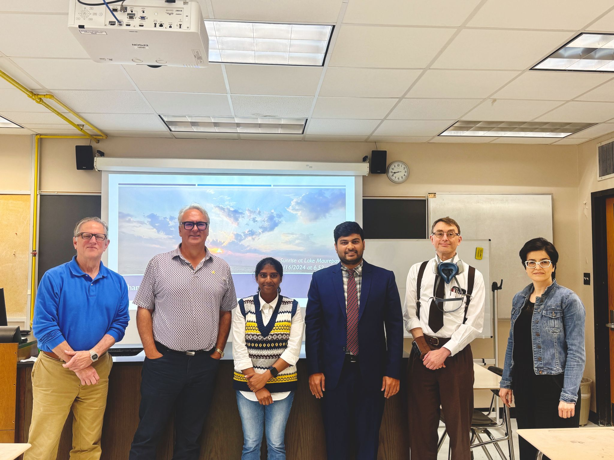
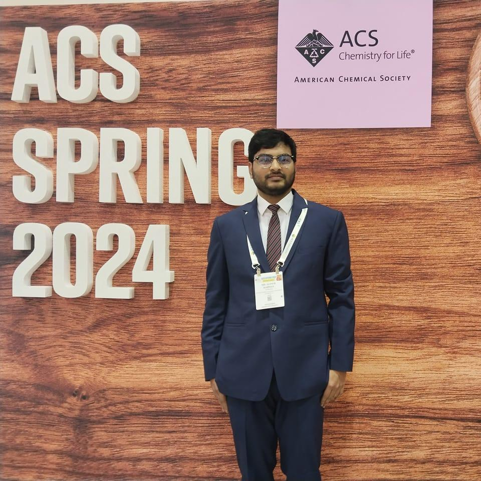
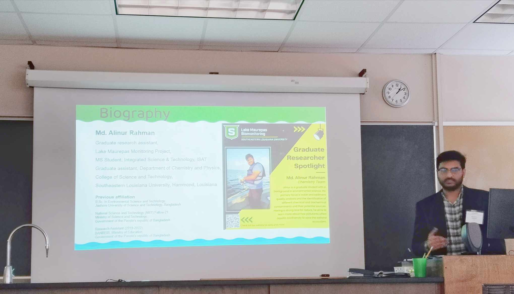
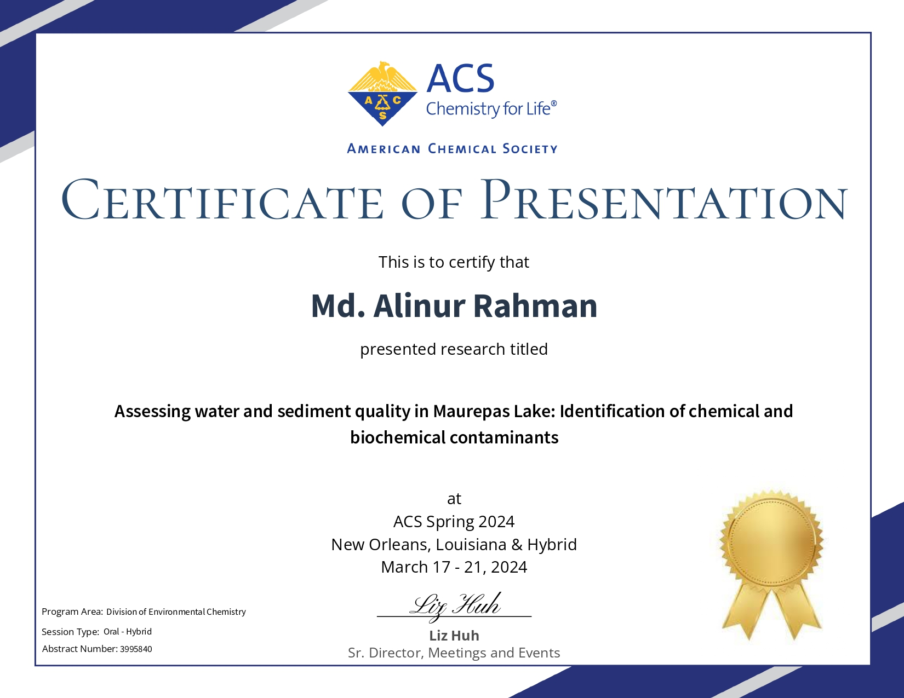
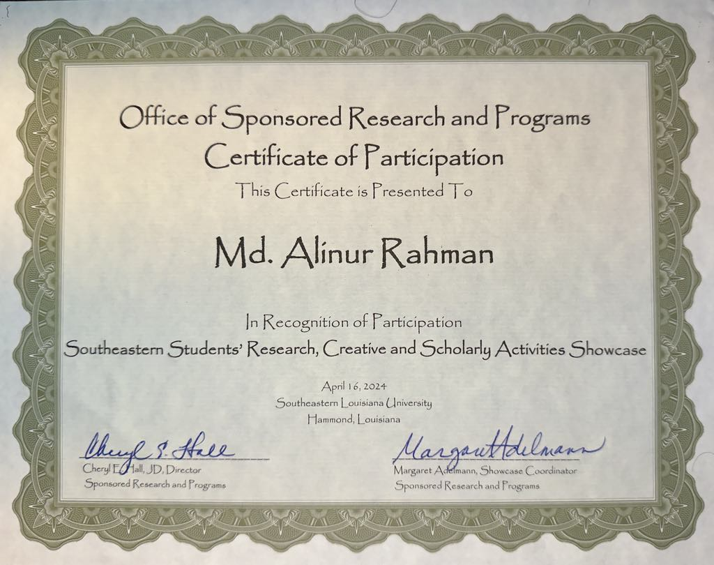

SMOKE TRANSPORT
How does wildfire smoke move from outdoors to indoors?
I study infiltration, ventilation, building characteristics, and environmental conditions that determine indoor exposure during wildfire smoke events.
MD. ALINUR RAHMAN
PhD Student in Environmental & Water Resources Engineering at the University of Kansas. My research connects wildfire smoke, indoor air quality, PM₂.₅ exposure, environmental data analysis, and practical mitigation.
Research focus
SMOKE TRANSPORT
I study infiltration, ventilation, building characteristics, and environmental conditions that determine indoor exposure during wildfire smoke events.
INDOOR EXPOSURE
I am interested in indoor PM₂.₅, ultrafine particles, VOCs, gases, and the processes that shape occupant exposure and indoor air quality.
MITIGATION
I evaluate filtration, ventilation strategies, portable air cleaners, HVAC operation, and other building-level interventions.
Selected research
SYSTEMATIC REVIEW · WILDFIRE SMOKE
What A systematic assessment of wildfire-smoke infiltration, indoor air-quality impacts, health implications, and mitigation strategies in buildings.
How Structured literature screening and extraction, indoor/outdoor PM₂.₅ comparisons, statistical analysis, intervention classification, and spatial analysis.
Focus Connecting smoke transport and building operation with actionable approaches for reducing indoor exposure.
AIR QUALITY · KANSAS
Analysis of ambient PM₂.₅ observations across Kansas monitoring sites, with emphasis on elevated concentration events, temporal patterns, and potential implications for population exposure.
WATER QUALITY · BANGLADESH
Assessment of groundwater quality, water-quality indices, and non-carcinogenic and carcinogenic health risks associated with drinking-water contaminants.
SEDIMENT · COASTAL ENVIRONMENT
Investigation of trace-metal concentrations across salinity zones to characterize contamination patterns in a sensitive mangrove ecosystem.
URBAN POLLUTION · SOURCE APPORTIONMENT
Characterization of metals in urban road dust using multivariate statistical approaches to investigate contamination and potential source profiles.
Experience
2025 — PRESENT · UNIVERSITY OF KANSAS
Wildfire smoke, indoor PM₂.₅ exposure, infiltration and mitigation; R-based analysis; biomass-burning aerosol characterization; tube furnace and HTDMA studies; multivariate receptor modeling.
2023 — 2025 · SOUTHEASTERN LOUISIANA UNIVERSITY
Water and sediment contamination, environmental sampling, laboratory analysis, multivariate statistics, source identification, scientific visualization, and undergraduate laboratory instruction.
2023 · PUBLIC WORKS DEPARTMENT, BANGLADESH
Urban microclimate and urban forestry research examining relationships among tree characteristics, ambient temperature, and relative humidity.
2020 — 2022 · JASHORE UNIVERSITY OF SCIENCE AND TECHNOLOGY
Field and laboratory research on methane emissions from woody components of the Sundarbans mangrove forest.
Publications
My work spans air quality, water and sediment contamination, environmental risk assessment, constructed wetlands, microplastics, and environmental data analysis.
Rahman, M. A.; Gunawardhana, T.; LaCour, Z.; Erwin, E.; & Emami, F. · ACS Omega 10(32), 35637–35650 (2025)
View DOI ↗Gunawardhana, T.; Rahman, M. A.; LaCour, Z.; Erwin, E.; & Emami, F. · Environments 11(12), 268 (2024)
View DOI ↗Siddique, A. B.; Rahman, M. A.; Gazi, E.; Khatun, M. N.; & Khan, A. S. · H2Open Journal 9(2), 144–162 (2026)
View DOI ↗Rahaman, M. H.; Rahman, M. A.; et al. · Environmental Monitoring and Assessment 197, 1135 (2025)
View DOI ↗Akteruzzaman, M.; Rahman, M. A.; et al. · Heliyon 9(1) (2023)
View DOI ↗Rahman, M. A.; Sayeed, K. M. A.; Ferdos, J.; Razzak, M. A.; Muktadir, M. A.; & Rahaman, M. H. · Next Research 1(2), 100063 (2024)
View DOI ↗Rahman, M. A. & Habiba, U. · HydroResearch 6, 166–176 (2023)
View DOI ↗Rahman, M. A.; et al. · Environmental Challenges 9, 100631 (2022)
View DOI ↗Rabbi, F. M.; Hasan, M. K.; Rahman, M. A.; et al. · Water Science and Technology (2024)
View DOI ↗Siddique, A. B.; et al.; Rahman, M. A.; et al. · Pollutants 5, 7 (2025)
View DOI ↗Arefin, S.; et al.; Rahman, M. A.; et al. · Regional Studies in Marine Science 79, 103841 (2024)
View DOI ↗Ali, M. S.; et al.; Rahman, M. A.; et al. · Water Practice & Technology 19(10), 4128–4147 (2024)
View DOI ↗Hakim, M. A.; et al.; Rahman, M. A.; et al. · Pollution and Conservation Environment (2025)
View DOI ↗Karim, R.; Nahar, N.; Shirin, S.; & Rahman, M. A. · Journal of Bioscience and Agriculture Research 8(2), 746–753 (2016)
View DOI ↗Path
2025 — PRESENT
University of Kansas · Lawrence, Kansas
Research on wildfire smoke, indoor air quality, PM₂.₅ exposure, aerosol characterization, infiltration, and mitigation.
2023 — 2025
Southeastern Louisiana University · Hammond, Louisiana
Thesis: Quantitative Analysis of Contaminants in Lake Maurepas and Source Identification Using Multivariate Statistical Modeling.
2015 — 2020
Jashore University of Science and Technology · Bangladesh
Thesis: Wastewater Treatment Using Horizontal Subsurface Flow Constructed Wetlands.
Research moments





Conferences
LAS · 2025
Oral presentation · Louisiana Academy of Science · Alexandria, Louisiana.
ACS SPRING · 2024
Oral presentation · American Chemical Society · New Orleans, Louisiana.
LAS · 2024
Oral presentation · Louisiana Academy of Science · Hammond, Louisiana.
EARLIER CONFERENCE WORK
Conference contributions on hospital indoor air quality, nutrient removal, and phytoremediation in constructed wetland systems.
Toolkit
R · MATLAB · OriginPro · GraphPad Prism · Microsoft Excel
ArcGIS Pro · ArcMap 10.8 · Spatial environmental assessment
Tube Furnace · HTDMA · PM₂.₅ exposure assessment · Biomass-burning aerosols
Agilent MP-AES · DMA-80 Evo · DR-3900 Spectrophotometer · DRB-200 Reactor · HACH systems
Systematic review · Data extraction · Environmental risk assessment · Contaminant source identification
LaTeX · Mendeley · Microsoft Word · Adobe Photoshop · Conference presentations
Professional service
PEER REVIEW · 2025
Recognized for reviewing a manuscript for Environmental Monitoring and Assessment in 2025.
Recognition & service
RESEARCH SUPPORT
PhD Research Assistantship at KU; M.S. Graduate Assistantship at Southeastern Louisiana University; National Science and Technology Research Fellowship, Bangladesh (2021); Ministry of Education-funded research assistantship.
FUNDED RESEARCH
Research supported by the Ministry of Science and Technology, JUST Research Fund, and TWAS-COMSTECH Joint Research Grant, including mangrove stoichiometry and nature-based wastewater treatment.
LEADERSHIP
Cultural Chair, International Student Organization at KU; former President of Save the Nature of Bangladesh; Founder & President of Street Child Helping Volunteer Organization.
Teaching
UNIVERSITY OF KANSAS
Teaching support in Civil, Environmental & Architectural Engineering, including undergraduate laboratory instruction.
SOUTHEASTERN LOUISIANA UNIVERSITY
Supported Analytical Chemistry, Analytical Chemistry Laboratory, and Modern Instrumental Analysis.
Connect
I am interested in research collaborations at the intersection of outdoor air pollution, buildings, indoor exposure, and environmental health.
Md. Alinur Rahman
PhD Student · University of Kansas
Lawrence, Kansas
Academic contact & researcher profiles
alinur.rahman@ku.edu ORCID: 0000-0001-8862-4149 ↗ Google Scholar ↗ LinkedIn ↗